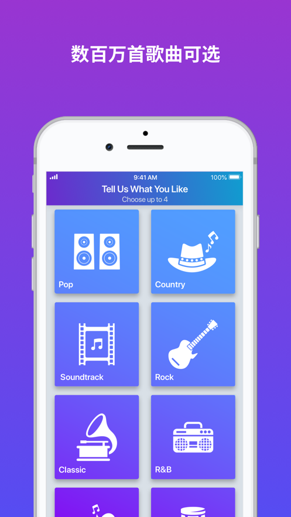
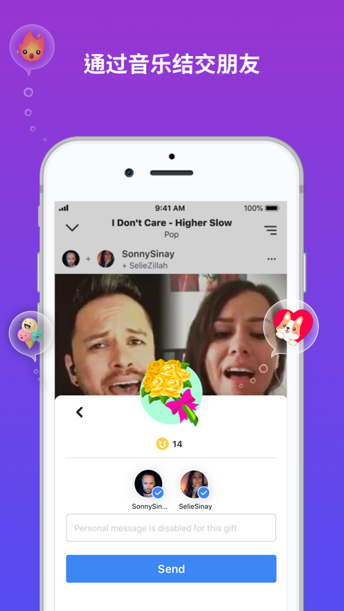

第一次拿起手机就能唱？Smule 零基础五分钟上手指南
还没在手机上 K 过歌？这篇带你从下载到开口唱完一整首歌，手把手走一遍，零门槛。
这篇能带你从完全不懂到把一首歌完整唱完、发布出去，全程不需要任何唱歌基础。
它到底是干嘛的
想象一下：手机就是你随身携带的 KTV 包厢，你点歌、跟着伴奏唱，麦克风实时收音，唱完直接录成一段表演——Smule 就是这么一个"手机上的卡拉 OK + 社交社区"。它的核心逻辑特别简单：选一首歌 → 跟着伴奏唱 → 录音发布。听起来没什么新意，但它把这件事做到了极致——歌库几十万首（从流行到古典到音乐剧）、音效自动修音（跑调也不怕）、还能和远在地球另一端的陌生人合唱一首歌。想了解更详细的功能说明，可以去Smule 官网看看。

五分钟上手：从下载到第一次开口
别担心，整个流程真的只需要五分钟。跟着走：
第一步：下载安装。手机应用商店搜 "Smule" 就能找到，iOS 和 Android 都有。也可以直接去官方下载拿安装包，国内部分应用商店可能搜不到，换个方式找就行。安装完打开，第一件事是允许麦克风权限——这个必须给，否则没法录音。通知权限建议也勾上，有人邀请你合唱或者收到礼物的时候能及时收到提醒。相机和相册权限先不用管，后面想用视频模式或者换封面的时候再开也不迟。
第二步：注册一个账号。打开 App 会让你选登录方式——邮箱、手机号、Facebook、Google、Apple ID 都行。推荐用邮箱注册，后面可以在设置里绑定多个第三方登录方式（手机号、Apple ID 这些都能绑），这样就不会出现"注册了好几个账号记混了"的尴尬情况。注册完它会问你喜欢什么音乐风格，随便选几个就行，后面随时可以改。昵称和头像也先随便填，以后想换在个人主页点一下就能改。
第三步：找一首歌来唱。App 首页就是歌库（songbook），你可以搜歌名、搜歌手，也可以按分类翻。热门歌曲的搜索量最大，新人可以先从热门歌里挑一首自己熟悉的。点进去会看到这首歌可以"独唱"或者"加入别人的合唱"——第一次建议先独唱，熟悉一下节奏。
第四步：跟着伴奏唱。进到录音页面，会有一个倒计时（可以在设置里关掉），然后伴奏响起，你对着麦克风唱就行。注意看屏幕上的歌词滚动条和音准指示——绿色代表你唱准了，偏了也没关系，Smule 有自动修音功能，发布前还可以加音效滤镜（Studio、Pop、Rock 几种风格，试一下哪种适合你的声音）。唱完点停止，App 会自动进入预览页面，你可以回听一遍，觉得不满意就删掉重录。

第五步：发布。预览页面觉得 OK 了，点"Publish"进入发布设置。可见性选"公开"就行（选私密只有自己能看到，就没人评论了）。描述栏可以写一句话，比如"第一次唱，求轻喷"，再加几个热门标签（#karaoke #smulevibes 之类的）。点发布，等个十几秒，你的第一首歌就上线了——之后可以在个人主页看到自己的所有作品。
上手后先玩这三个功能
录完第一首歌别着急卸载，Smule 真正好玩的地方还在后面。以下三个功能是新手最值得先碰的，如果想深入了解每个功能的具体参数，可以翻一下Smule 文档。
第一，二重唱（Duet）——Smule 最有特色的功能。什么是二重唱？就是别人先唱了这首歌的一个声部（比如女声），你点进去可以加入唱另一个声部（男声），最后会把两个声音合成在一起。想象一下和自己喜欢的歌手"合唱"一首歌是什么感觉——Smule 上有很多热门歌手发布的"Open Call"（开放合唱邀请），任何人都能加入。怎么找？在歌库搜一首歌，往下翻就能看到"已有多少人合唱过这首歌"，点进去挑一个加入就行。你会看到两个声轨并排显示，你的声音叠上去之后，整首歌就变成两个人一起唱的了。

第二，音效滤镜和 AI 声音风格。预览页面里有几个选项：音效滤镜（Studio 是通用的干净音色，Pop 会让声音更明亮，Rock 带一点颗粒感，Lounge 比较慵懒）、音调升降调（这首歌原调太高唱不上去？降个调就行，发布后所有人听到的都是你定的调）、Voice Alchemy——这个是 AI 功能，可以把你的声音变换成不同的风格（比如更像某个人的音色，或者变成电子音效果）。每个都试一下，你会发现自己的声音也能很好听。
第三，社区互动。发布完不是终点。你会收到评论、点赞、甚至有人想加入你的合唱。别晾着——有人评论就回一句，有人加入你的合唱就点接受，这样互动起来，Smule 的算法会更多地把你推荐给其他人。晚上 8 点到 11 点是用户活跃高峰，这时候发布作品有更高概率被刷到。
小白的三个常见疑问
Q：录歌的时候声音很小或者没声音？首先检查麦克风权限有没有真的开（有时候系统显示开了但 App 里没生效）。然后看手机是不是被其他应用占用了麦克风——比如后台开着语音通话或者录音器，先关掉再回来。如果用了蓝牙耳机，试试拔掉换有线的，蓝牙延迟有时候会导致录音异常。Android 用户还要检查一下电池优化设置，把 Smule 设为"不受限制"，不然录到一半系统可能会把 App 杀掉。
Q：登错账号了怎么办？如果你用不同方式注册过好几个账号（比如邮箱一个、Facebook 一个、手机号又一个），Smule 官方不支持合并账号——这点要提前有心理准备。最稳妥的做法是选定一个主账号（推荐邮箱注册的那个），以后只用这个登录。App 会记住之前的登录凭证，如果一直登错，卸载重装是最干净的解决办法。特别注意：如果你曾经在 App 内购过 VIP，那个 VIP 是和当时登录的 Smule 账号绑定的，登错了就看不到了，退出当前账号、用购买 VIP 时的那个登录方式重新登录就能恢复。
Q：发布了但没人听？先别急。Smule 有自动内容审核系统，发布后会先进入审核队列，审核通过才对社区可见。选热门歌来唱（热门歌搜索量大，你的作品出现在"该歌曲独唱列表"里的概率更高）、加好标签、晚上 8 点到 11 点这个活跃时段发布——这三件事做完，被听到的概率会高很多。还有一个小技巧：发布完主动发起 Open Call 邀请，让你关注的人有机会看到并加入你的合唱，有人加入的作品算法会给更多流量。
下一步：开始玩
好了，五分钟走完一遍流程，你已经会用 Smule 唱歌发布了。进阶方向推荐试试群组合唱（Group Jam）——多个人同时唱一首歌，像线上 K 歌房一样热闹，是 Smule 社区里最有氛围的玩法。
这套 Smule 的完整资料我同步维护在了多个代码仓库，方便不同网络环境下随时查阅：GitHub 上有最完整的版本可以跟进度，Gitee 和 GitCode 上也各有一份备份，遇到访问不方便的时候切换一下就行。